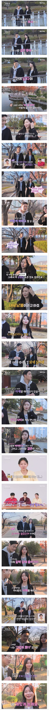
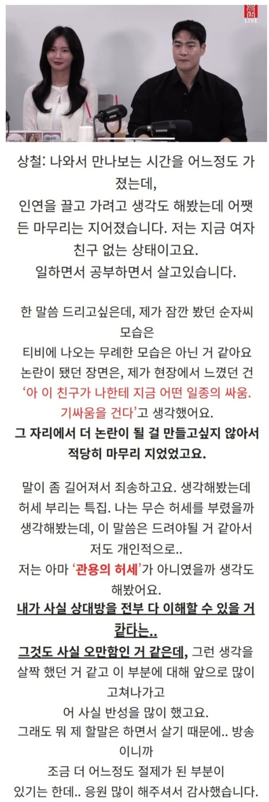
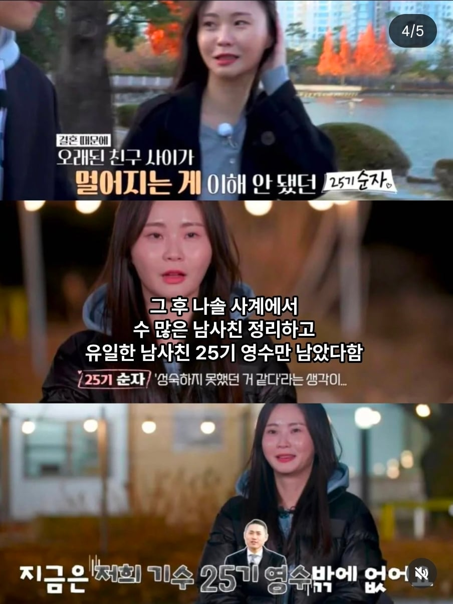
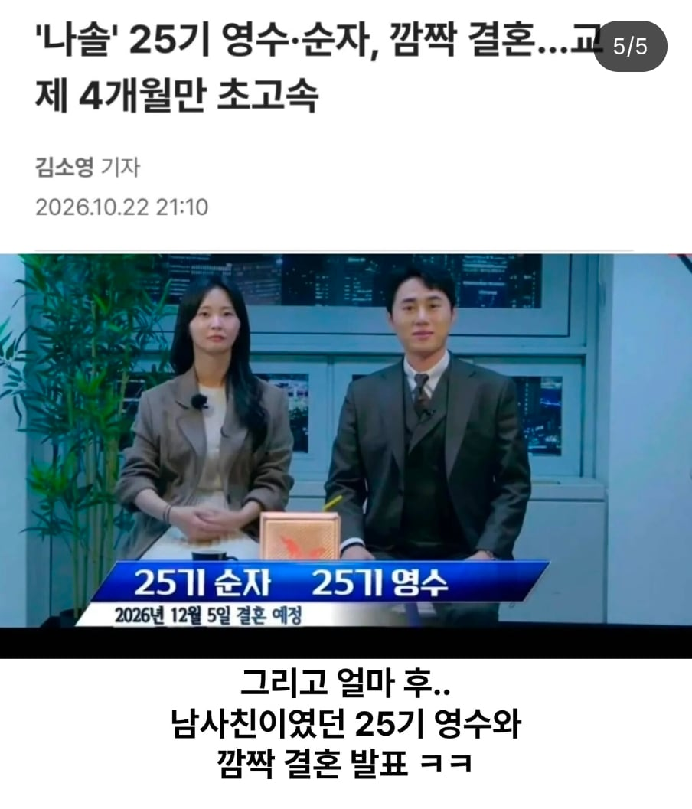

나는솔로 25기 순자
이때 남사친 발언으로 많은 논란을 일으킴
그리고 나는솔로 최종선택에서 상철과 최종커플됨

하지만 라방에서 상철과 헤어졌다는걸 밝힘
이때 상철이 관용의 허세 드립침...

그리고 이후 남사친 다 정리하고 이제 지금 남사친은 25기 영수만 남았다고 밝힘

그리고 갑자기 유일한 남사친이었던 25기 영수와 깜짝 결혼 발표
사귄지 2개월만에 결혼한다고 함
남사친, 여사친은 없다는걸 직접 증명한 나솔 출연자

영수 머리스타일 바꾸니 훨낫네